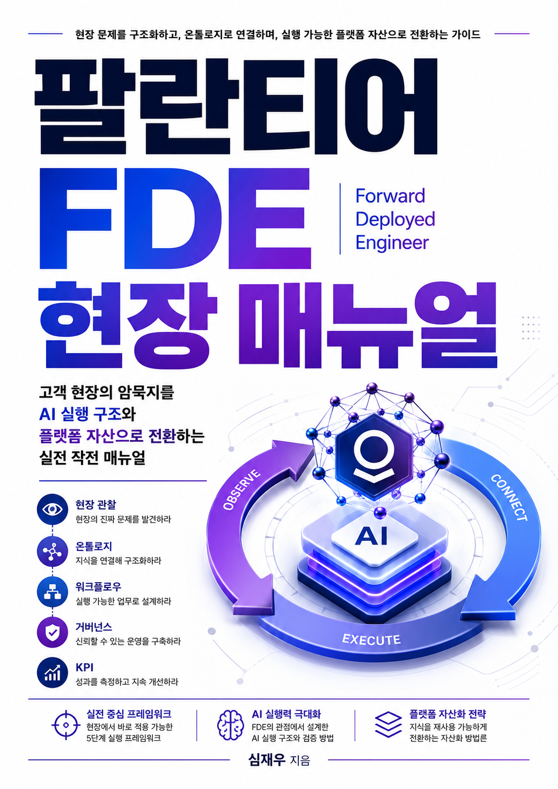

세우다 · 확립하다
현장의 문제를
실행 가능한 자산으로
YABOAZ는 현장의 문제를 발견하고, 온톨로지로 구조화하며, AI 에이전트와 워크플로로 실행하고, 검증된 해결책을 재사용 가능한 플랫폼 자산으로 전환하는 K-FDE 실행 플랫폼이다.
야보아즈 — 견고하게 세우고, AI로 실행한다.YABOAZ — Understand the Field. Build with Strength.YABOAZ — 견고하게 세우는 힘

YABOAZ 이름의 의미
힘 · 견고함
견고하게 세우는 힘
발견
현장 신호와 증거에서 진짜 문제를 정의합니다.
구조화
객체·관계·규칙을 온톨로지로 연결합니다.
실행
AI Agent와 워크플로가 승인된 행동을 수행합니다.
자산화
검증된 해결책을 다음 프로젝트에 재사용합니다.
현장 실행을 만드는 핵심 저서 11권
현장 실행, 문제 해결, 온톨로지, AI, 리더십과 커뮤니케이션을 연결하는 실전 지식 기반입니다.
 VOL. 01
VOL. 01현장 실행
현장의 신호를 명확한 실행 경로로 전환합니다.
 VOL. 02
VOL. 02FDE 전략
현장 신호를 실행 구조와 연결합니다.
 VOL. 03
VOL. 03FDE 현장 매뉴얼
문제 정의, 온톨로지, 에이전트와 워크플로를 적용합니다.
 VOL. 04
VOL. 04제갈량은 왜 FDE 조직을 만들지 못했을까
삼국지 인물에게서 FDE와 온톨로지 미래 역량을 발견합니다.
 VOL. 05
VOL. 05바이브 코딩
실제 요구에서 유용한 플랫폼을 빠르게 만듭니다.
 VOL. 06
VOL. 062A4 문제 해결
목표, 문제, 원인과 행동을 구분해 해결합니다.
 VOL. 07
VOL. 07리더십 커뮤니케이션
사람을 실행과 성과의 방향으로 정렬합니다.
 VOL. 08
VOL. 08탁월한 기업
작은 개선을 통해 조직 성과를 높입니다.
 VOL. 09
VOL. 09너와 나의 커뮤니케이션
관계와 갈등을 건설적인 대화로 전환합니다.
 VOL. 10
VOL. 10GE 인재개발
실전 프레임워크로 리더와 핵심 인재를 성장시킵니다.

VOL. 11AI와 일의 미래
AI가 일과 사회에 만드는 새로운 조건을 탐구합니다.